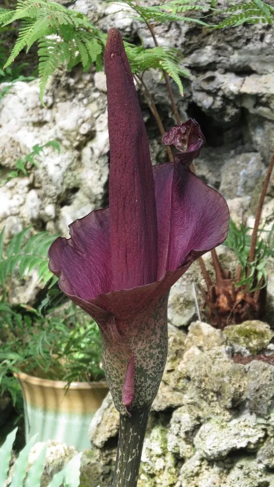

农作物与经济植物 · 植物界
魔芋 Amorphophallus konjac

魔芋的地下球茎富含葡甘聚糖，可制成魔芋豆腐和粉丝，低热量、饱腹感强，是重要的经济作物，但生块茎有毒。
- 分类
- 门被子植物门纲单子叶植物纲目泽泻目科天南星科属魔芋属
- 栖息环境
- 温暖湿润、半阴的山地，土层深厚排水良好
- 地理分布
- 原产中国南方与东南亚，现中国云南、四川、湖北等地广泛栽培
- 保护级别
- 暂无评估（栽培作物）
物种志
魔芋是天南星科多年生草本，株高 0.5–1.5 m。地下球茎扁球形，富含葡甘聚糖；叶片大，掌状复叶，叶柄粗壮、有斑纹，每年只抽生一叶。花为肉穗花序，佛焰苞紫红色，花有臭味，靠苍蝇传粉。魔芋通常先长叶、后开花，开花后球茎养分耗尽。
魔芋原产中国南方与东南亚，中国栽培历史悠久，云南、四川、湖北等地为主产区。它喜温暖湿润、半阴环境，不耐寒，适宜在土层深厚、排水良好的土壤中种植。球茎含葡甘聚糖，经加工可制成魔芋豆腐、魔芋粉丝、魔芋爽等食品，低热量、富含膳食纤维，有饱腹感；工业上还可用于造纸、印染和石油钻井。注意生魔芋块茎含草酸钙针晶和生物碱，有毒，必须经碱水煮制等加工后才能食用。
形态与习性
- 株高0.5–1.5 m
- 球茎扁球形，富含葡甘聚糖
- 叶掌状复叶，每年只抽生一叶
- 用途魔芋豆腐、粉丝等低热量食品
- 注意生块茎含草酸钙针晶，有毒
趣味知识
- 我们吃的魔芋豆腐、魔芋爽，原料就是魔芋的球茎。
- 魔芋球茎富含葡甘聚糖，热量低、饱腹感强。
- 生魔芋有毒，必须经过碱水煮制等加工后才能食用。